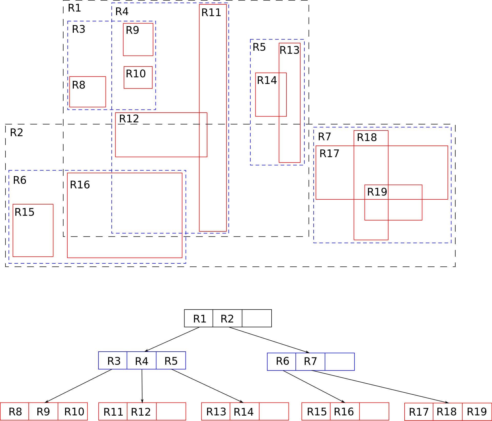
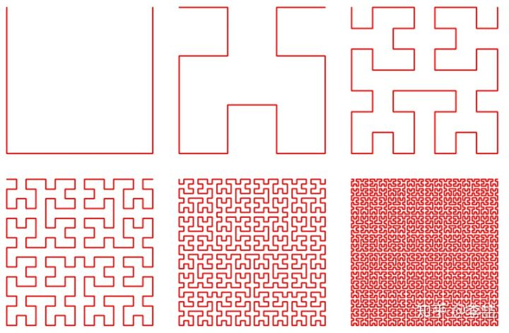

1. overview
数据库分类
- 事务处理型
- 数据分析型
存储索引家族：
- 日志结构的存储引擎
- 面向页的存储引擎，比如b-tree
2. 哈希表索引
核心：将key hash到对应的文件位置
- 使用日志方式，不修改已有记录，在末尾增加
- 如果能够保持key在内存中，那么写入速度会很快
- 将日志分段，到一定大小，生成新的段
- 在合适时机进行段合并，只保留最新的结果
- 使用后台线程，在完成合并之前使用老的index
- 合并之后切换到新的index，删除老的index
- 最终，每一个段都会有自己的索引（注意，可能有多个段）
- 搜索需要从最新的段开始往前找索引表
在实现中还需要考虑：
- 文件格式：二进制 > CSV
- 删除记录：可以通过标记，在合并时候处理被删除的key
- 崩溃回复：如果重启引起内存中的key map丢失，可以
- 从头开始扫描文件，重建key map
- 或者在平时就定时将key map映射到磁盘之上
- 部分写入的记录：写日志中也有可能崩溃，加入校验值来发现损坏情况。
- 并发控制：因为段是需要严格顺序写入的，因此
- 写必须是单线程
- 读可以多线程
为什么之追加不直接修改文件：
- 顺序写性能会好很多，特别对于HDD。但是对于SSD或者nvme磁盘如何呢？
- 因为追加是只读的，因此兵法和崩溃恢复都简单很多。
- 合并旧段可以减轻文件碎片化问题
哈希表索引局限性：
- 索引哈希表必须全部放入内存，如果spill到磁盘上，性能会收到影响；另外，哈希变满时候，哈希冲突会影响性能。
- 区间查询效率不高：就是说相邻的key的value值分布基本不会是相邻的，因此扫描一个range的keys，需要逐个查找其中的每一个key。
- 换句话说，你没办法知道range中哪些key是存在的，只能一个一个测试。
3. SSTable索引
哈希表索引中保存在文件中的key-value值对是不排序的，出现的顺序基本是按照写入的顺序的来的，无论是原始文件还是合并后的文件。
如果我们要求磁盘上的文件值对，都是按照key的顺序来保存。那么会有如下好处：
- 合并两个segment file会变得高效
- 内存中的索引不需要保存所有key的索引信息，只需要保存几个作为标点的key的索引，其他key可通过区间扫描来寻找。在区间不大时候，需要扫描的range是有限的，性能方面也是非常快的。
- 文件可以进行压缩，我们只需要记录segment的start和end的key
如何实现：
- 在内存中引入排序结构，比如红黑树或者AVL-tree，在抵达threshold之后写入磁盘
- 查找的时候按照先内存后磁盘的方法进行搜寻
- 定时后台合并文件
- 为了支持崩溃恢复，可以为内存中的数据额外做一份普通的日志来作为恢复使用
3.1. LSM-Tree
所有类似这种排序后的segment file合并的结构都可以称之LSM-Tree(Log-structured merge-tree)。
包括LevelDB,RocksDB和Cassandra，Hbase都有LSM-tree的影子。另外ES以来的Lucence索引引擎，也用了类似的逻辑：倒排索引按照key的顺序保存在文件中，通过额外的索引的索引来快速搜索这些倒排索引。
注意SSTable是索引，LSM-Tree是真正存储数据的文件结构。
3.2. 优化
最坏情况下，如果某个key不存在或者key只存在最老的segment中时候，需要触发一次全segment文件的扫描操作。对于key不存在的情况，引入blooming filter，保证如果filter告诉你不存在，保证key确实不存在。
对于后者，SSTable的压缩和合并逻辑会有一些影响，有两种合并逻辑：
- 大吞小
- 分层合并：将旧的数据分到单独的层级，然后进行合并
4. B-Tree
B-Tree将数据和索引分成固定大小的数据块，一般为4KB（配合x86的默认页大小4KB），然后将数据块们组织成树形结构。
参考：
简单来说，一个M维度的B-Tree节点可以如此描述：
1 | struct Node { |
另外有一些约束来保证B-Tree的搜索性能，对于一棵order为m的树（最多有m个子节点）：
- 任何节点如果有k个key，那么就有k+1个ref
- 除了叶子节点，每一层至少是半满的，也就是至少有[m/2]个key和key+1的ref；最多有有m-1个key和m个ref
- 每个internal 节点至少有2个子节点（2个ref）
在这种情况下，整棵树的高度可以限制在(N为key的个数）：
1 | H = \frac{log_{[m/2]}(N+1)}{2} |
注意一棵b树的每个节点既保存key对应的值，又保存了ref的信息。
4.1 B-Tree容错
B-Tree一般使用预写日志(write-ahead, WAL)，先写日志，再写Tree。
多线程情况下， B-Tree不像LSM-Tree那么容易。
4.2 B-Tree优化
- 写时复制
- B+ Tree，也就是在internal节点不保存具体节点的值，只保存ref或者其他索引信息；在叶子节点才保存具体的值。这样做的另外一个好处是可以把非叶子节点都加载到内存中。
- slibing节点直接可以增加额外的ref来快速遍历
- 分形树（FTI，Fractal Tree Indexes）
- 为叶子节点增加存储数据的buffer，组织成一棵树
- 为节点增加Message buffer，用于缓冲读写请求
5. LSM-Tree和B-Tree比较
写放大：合并数据时候引入的额外写入。
LSM-Tree优势：
- 有时候具有较低的写放大
- 顺序写人更加好的cache效率
- 更好的压缩和更少的碎片
LSM-Tree缺点：
- 后台合并操作影响前台读写性能，相对而言，B-Tree的性能更加稳定
- 高吞吐量时候，如果后台合并速度跟不上，磁盘空间最终会被吃完。
- B-Tree更好的支持锁机制。在许多关系数据库中，事务隔离是通过key范围上的锁来实现的。
6.其他
6.1. 二级索引
除了主索引外的额外索引，但是会有key重复的问题。一般通过拼凑其他信息来使得key唯一。
6.2. 堆文件
一般索引中不保存具体的值，只是保存一个ref信息或者位置信息，具体的内容保存在堆文件中。
在更新时候，如果新值不大于旧值，那么直接覆盖就可以了；否则需要重新分配空间，并且所有指向这个值的ref信息都需要更新或者留下一个指向新位置的间接跳转信息。
6.3. 聚集索引
索引中直接保存具体的值。另外有保存部分值的覆盖索引或者包含列索引。（类似cache）
无论那种都可以提高读取性能，代价是复杂的插入和事务同步问题。
6.4. 多列索引
对于多列进行合并索引。
- 级联索引
把多个列合并拼接起来作为一个key索引。对于A+B拼接的，可以对于A+B或者A进行快速索引，但是没有办法对B单独进行快速索引。
- 多维索引
对于多个列进行真正的索引。传统的B-Tree和LSM-Tree都没有办法高效的应对这种查询。
6.4.1. R-Tree
R树是用来做空间数据存储的树状数据结构。例如给地理位置，矩形和多边形这类多维数据创建索引。
类似于B-Tree，R-Tree将空间划分成多个子空间（类似于一个range），然后继续划分直到最终值，效果如下：

与此相关的还有其他的名为空间索引的机制：
参考文章
空间索引列表：
- GeoHash
- kd-tree
- Grid index
- 四叉树/八叉树
- Space filling curve：通过一条线来描述空间上的所有位置，二维值可以转化成单个值

- LSH（Locality Sensitive Hashing
6.5. 全文搜索
全文搜索不同于之前的索引有明显的范围。全文搜索往往是模糊的。
lucene通过给key构建前缀树来提供key的模糊搜索。
7. 内存数据库
- 随机访问 -> 可以使用磁盘没有办法高效实用的数据结构
- 易失性 -> NVM
标准产品：
- redis
- RAMCloud
8. 事务处理（OLTP，online transaction processing)
OLTP类似于传统的SQL引擎，查询没有固定的format，更多是ad-hoc(online)的查询。OLAP（online analytic processing），类似于数据仓库。OLTP的索引更多使用上述提到的索引；OLAP需要新设计的索引。
| Property | Transaction processing systems (OLTP) | Analytic systems (OLAP) |
|---|---|---|
| Main read pattern | Small number of records per query, fetched by key | Aggregate over large number of records |
| Main write pattern | Random-access, low-latency writes from user input | Bulk import (ETL) or event stream |
| Primarily used by | End user/customer, via web application | Internal analyst, for decision support |
| What data represents | Latest state of data (current point in time) | History of events that happened over time |
| Dataset size | Gigabytes to terabytes | Terabytes to petabytes |
典型的数据仓库
- Terdata
- Vertica
- SAP HAHA
- Hadoop系列
9. 列式存储
- 按照列的方式来存储数据，而不是传统的整行的顺序
- 只需要关注几列 -> 更少的数据读取和更快的读取速度
- 方便压缩
- 位图进一步的游程(Run-Length)编码
- cache & memory friend，并且可以使用SIMD指令
- 列式存储的排序和索引
HBase列簇中的数据式按照行来存储的。
10. Data Cubes and Materialized Views(物化视图)
物化会提前计算出一些结果然后保存下来。Data Cube就是按照各种不同维度聚合形成的数据块。
- 优势是预先计算能获得好的性能提升。
- 劣势缺乏灵活性和额外的存储空间。